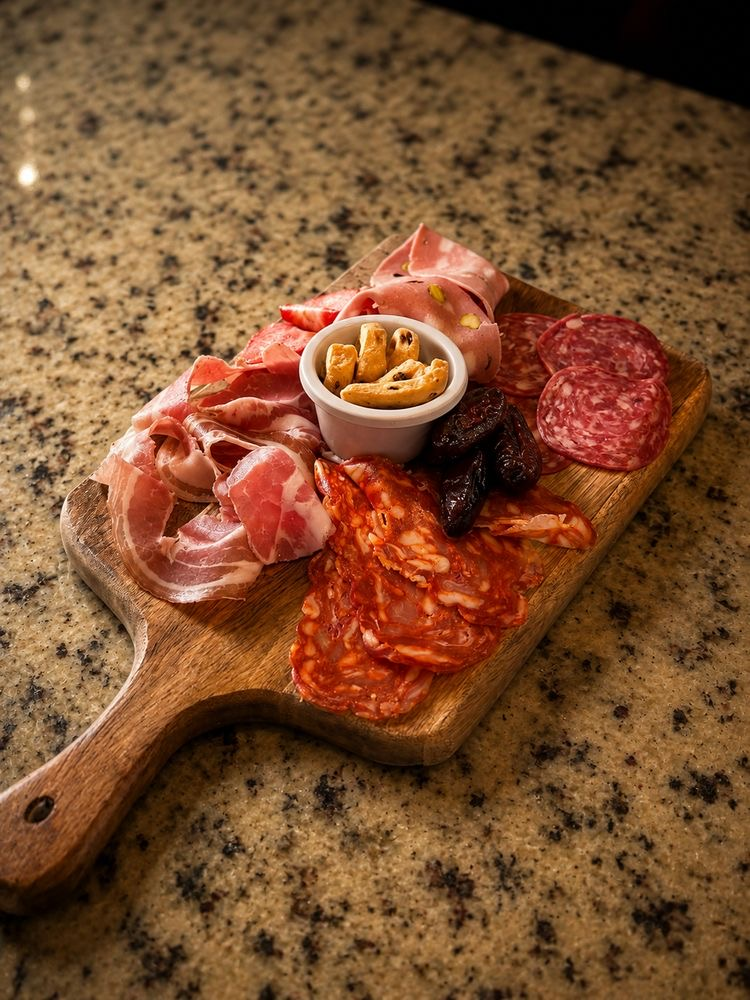
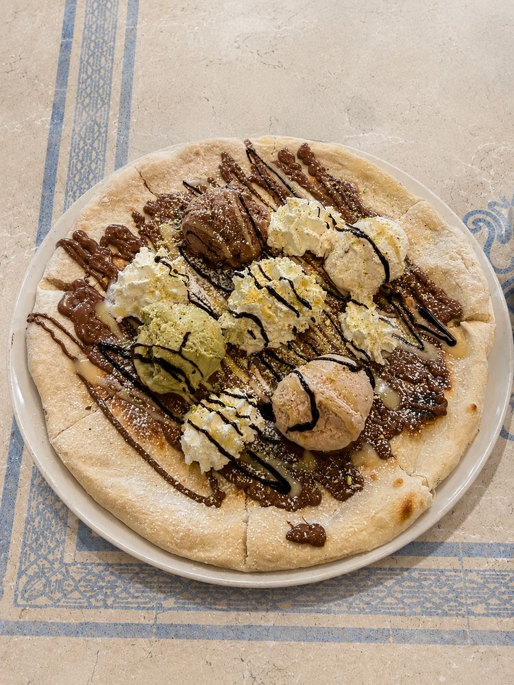

Da Luciano · Calpe · Costa Blanca
Authentic Italian cooking in Calpe
Wood-oven pizzas, fresh pasta, risotto, grilled meats, roast chicken and homemade desserts. Family recipes Luciano has cared for with the same passion for 14 years.
Open every day · 08:00 to midnight

Our menu
Eat like you are in Italy
Prices in euros, VAT included. V = vegetarian. Allergies or intolerances? Ask us before ordering and we will tell you what is in each dish.

Our story
Da Luciano, an Italian family in Calpe
It all began in 1998, when the family opened its first doors in Calpe. From those years comes what defines us today: cooking the way you do at home, with original recipes passed down through generations.
Fourteen years ago Piazza di Spagna was born, and with it a place people return to again and again: for breakfast, a quick lunch, a relaxed dinner or a group celebration. Slowly proofed dough, fresh pasta, gently simmered sauces and a table where everyone feels welcome.
Ci vediamo a tavolaLuciano · Piazza di Spagna
Gallery
A look at the table



Find us
See you in Calpe
- Address
- Avinguda Jaume I el Conqueridor, 3
03710 Calpe, Alicante - Opening hours
- Monday to Sunday: 08:00 – 00:00
Breakfast, lunch, dinner and takeaway.
Book a table or order takeaway
Call any of these numbers. Everything on the menu is also available to take away.